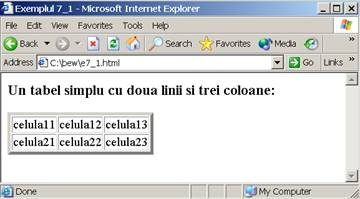

Tabele in HTML
Tabele
Pentru a insera un tabel se folosesc etichetele . Un tabel este format din
randuri. Pentru a incepe un rand intr-un tabel se folosesc etichetele (de la "table row" = rand de tabel).
Un rand este format din mai multe celule ce contin date. O celula de date se introduce cu eticheta (de la "table data" = date in tabel). in mod prestabilit
un tabel nu are chenar. Pentru a adauga un chenar unui tabel, se utilizeaza un atribut al etichetei numit border.

Atributul border poate sa nu fie urmat de nici o valoare, caz in care in care tabelul va avea un chenar de grosime prestabilita egala cu 1 pixel.
O valoare egala cu 0 a grosimii semnifica absenta chenarului.
Cand are grosimea nenula, chenarul unui tabel are un aspect tridimensional.

Folosirea etichetei de sfarsit este optionala. Asa cum am mai spus, atributul border poate sa nu fie urmat de nici o valoare, caz in care in care tabelul va avea un chenar de grosime
prestabilita egala cu 1 pixel.
Dimensiunile unui tabel - latimea si inaltimea - pot fi stabilite exact prin intermediul a doua atribute, width si height ale etichetei .
Valorile acestor atribute pot fi:
numere intregi pozitive reprezentand latimea respectiv inaltimea in pixeli a tabelului;
numere intregi intre 1 si 100, urmate de semnul %, reprezentand fractiunea din latimea si inaltimea totala a paginii.
Zona din jurul unui tabel
Valoarea atributului hspace a etichetei reprezinta distanta pe orizontala dintre imagine si text (spre exemplu)
Valoarea atributului vspace a etichetei reprezinta distanta pe verticala dintre imagine si text (spre exemplu)
Titlul unui tabel
Unui tabel i se poate atasa un titlu cu ajutorul etichetei (de la ,,table caption” = titlu de tabel). Aceasta eticheta trebuie plasata in interiorul etichetelor ,
dar nu in interiorul etichetelor sau .
Titlul unui tabel poate fi aliniat cu ajutorul atributului align al etichetei astfel:
"bottom" (sub tabel)
"top" (deasupra tabelului)
"left" (la stanga tabelului)
"right" (la dreapta tabelului)
Cap de tabel
Un tabel poate avea celule cu semnificatia cap de tabel. Aceste celule sunt introduse in eticheta (de la "table header" = cap de tabel) in loc de .
Obervatii:
Toate atributele care pot fi atasate etichetei pot fi, de asemenea, atasate etichetei .
Continutul celulelor definite cu este scris cu caractere aldine si centrat.
Extinderea unei celule peste celulele din dreapta ei se face cu atributul colspan, a carui valoare determina numarul de celule care se unifica.
Extinderea unei celule peste celulele de dedesubt se face cu atributul rowspan, a carui valoare determina numarul de celule care se unifica.
Celule vide ale unui tabel
Daca un tabel are celule de date vide, atunci acestea vor aparea in tabel fara un chenar de delimitare.
Exemplu:
In scopul de a afisa un chenar pentru celulele vide, se utilizeaza urmatoarele trucuri (ambele afiseaza un chenar pentru celule vide):
dupa se pune caracterul ; (no break space)
dupa se pune
Alte atribute ale etichetei :
background permite stabilirea unei imagini pentru fondul unui tabel;
bordercolor permite stabilirea intregii culorii pentru chenarul unui tabel.
(bordercolorlight permite stabilirea unui colt colorat pentru chenarul 3D al unui tabel)
(bordercolordark permite stabilirea altului colt colorat pentru chenarul 3D al unui tabel)
Grupuri de coloane
Blocul permite definirea unui grup de coloane. Atribute acceptate de :
span determina numarul de coloane dintr-un grup
width determina o latime unica pentru coloanele din grup
align determina un tip unic de aliniere pentru coloanele din grup
Intr-un bloc , coloanele pot avea configurari diferite daca se utilizeaza elementul , care admite atributele:
span identifica acea coloana din grup pentru care se face configurarea. Daca lipseste, atunci coloanele sunt configurate in ordine;
width determina o latime pentru coloana identica prin span;
align determina o aliniere pentru coloana identica prin span.
Atributul rules al etichetei permite alegerea unor delimitatori pentru celulele unui tabel. Valorile posibile sunt: all, cols, rows, none.